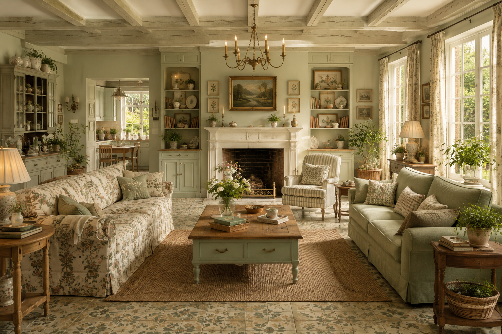

Discover thoughtful ideas for creating
inviting interiors that feel personal,
comfortable and timeless.
HOME DECOR
12 JUNE, 2026

Disclaimer: All products featured on OKAD are independently selected by our editors. However, we may earn a small commission when you purchase products through links on our site, at no additional cost to you.
A beautiful home does not have to follow every trend.
The most inviting spaces are often the ones that feel
personal, comfortable and naturally lived in.
Warm textures, natural materials and carefully chosen
details can bring a sense of calm to everyday spaces.
From a favourite chair to a simple piece of artwork,
small choices can make a room feel truly yours.
Rather than creating a home all at once, let it grow
slowly around the things you love and the moments you
want to remember.
Inspired by This Article
Thoughtful pieces inspired by this story.
Natural Linen Cushion
A soft, timeless piece that brings
warmth and texture to your space.
Your home does not need to follow every trend
to feel beautiful. The most inviting spaces are
often the ones that reflect the people who live
in them.
Thoughtful textures, natural materials and
small personal details can create a space that
feels warm, calm and effortlessly lived in.
SMALL DETAILS MATTER
Sometimes it is the smallest details that give
a room its character. A favourite object, a
beautiful piece of fabric or a carefully chosen
piece of artwork can completely change how a
space feels.
Let your home grow naturally around the things
you love.
Effortless Style Begins with Thoughtful Pieces
Build a timeless wardrobe with versatile essentials that bring
comfort, confidence and understated elegance to everyday dressing.
FASHION
12 JUNE, 2026
Disclaimer: All products featured on OKAD are independently selected by our editors. However, we may earn a small commission when you purchase products through links on our site, at no additional cost to you.
Personal style does not have to be complicated. The most memorable
wardrobes are often built around a few thoughtful pieces that feel
comfortable, useful and naturally suited to the person wearing them.
Instead of constantly following new trends, look for pieces that
work beautifully together and can move easily from one occasion to
another.
A well-chosen shirt, a beautifully cut pair of trousers or a simple
everyday layer can become the foundation for countless outfits.
LESS, BUT BETTER
Thoughtful dressing is often about choosing quality over quantity.
When each piece has a purpose, getting dressed becomes simpler and
more enjoyable.
Soft textures, considered colours and timeless silhouettes can work
together quietly, creating a wardrobe that feels polished without
trying too hard.
Inspired by This Article
Thoughtful pieces inspired by this story.
Linen Oversized Shirt
A relaxed wardrobe essential with an effortless,
timeless feel.
A wardrobe should support your everyday life rather than make it
more complicated. Give your favourite pieces room to stand out and
allow your personal style to change naturally over time.
The goal is not to own more. It is to discover what feels right,
wear it often and let those pieces become part of your story.
The Little Rituals That Make Everyday Life Beautiful
Discover simple rituals that bring more intention, warmth and
pleasure to the ordinary moments of everyday life.
LIFESTYLE
12 JUNE, 2026
Disclaimer: All products featured on OKAD are independently selected by our editors. However, we may earn a small commission when you purchase products through links on our site, at no additional cost to you.
A beautiful life is not always made up of big occasions. Sometimes
it is found in the quiet moments we create for ourselves each day.
A slow morning, a favourite cup of coffee, fresh flowers on the
table or a few peaceful minutes away from a busy screen can change
the feeling of an ordinary day.
These small rituals give everyday life a sense of rhythm and remind
us to notice the details that might otherwise pass unnoticed.
MAKE ORDINARY MOMENTS MATTER
Small rituals become meaningful when they give us a chance to
pause. They create little spaces in the day where we can simply
enjoy what is already around us.
You do not need a complicated routine. Choose a few simple things
that make you feel present, comfortable and connected to your day.
Inspired by This Article
Thoughtful pieces inspired by this story.
Ceramic Morning Mug
A simple handmade-inspired piece for slow mornings.
When we begin to appreciate the small things, everyday life starts
to feel a little richer. A favourite object, a familiar ritual or
a peaceful corner can become part of what makes a day feel special.
Perhaps a meaningful lifestyle begins simply with noticing what is
already there.
A Softer Approach to Everyday Beauty
Explore thoughtful beauty rituals, simple habits and everyday
essentials that make getting ready feel calm and intentional.
BEAUTY
12 JUNE, 2026
Disclaimer: All products featured on OKAD are independently selected by our editors. However, we may earn a small commission when you purchase products through links on our site, at no additional cost to you.
Beauty can be a quiet part of everyday life rather than something
complicated or overwhelming. A few thoughtful rituals can make
getting ready feel slower, calmer and more enjoyable.
The most meaningful routines are often the ones that fit naturally
into your day and leave you feeling comfortable and refreshed.
Instead of chasing every new trend, take time to discover the
products and habits that genuinely work for you.
CREATE A ROUTINE THAT FEELS LIKE YOU
There is no single perfect beauty routine. What feels wonderful
for one person may not be right for another, and discovering your
own rhythm can make everyday care much more enjoyable.
Keep the products you reach for most often close by and allow your
routine to remain simple enough to enjoy rather than rush through.